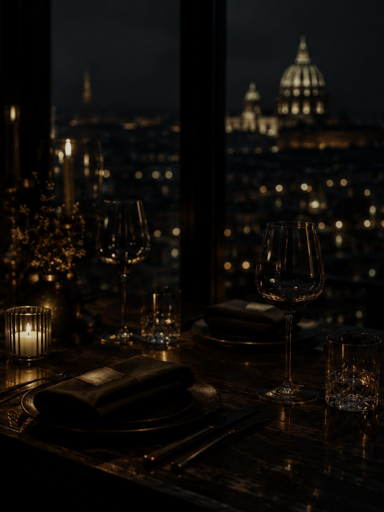
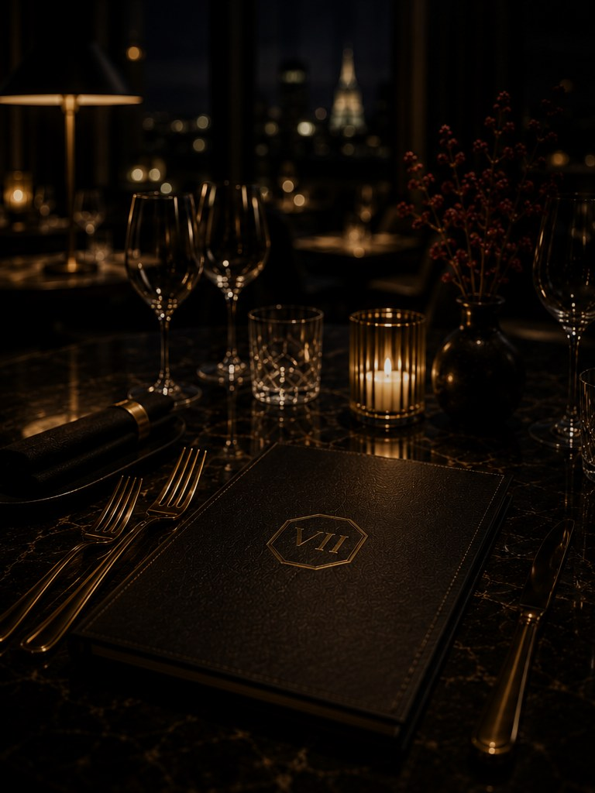
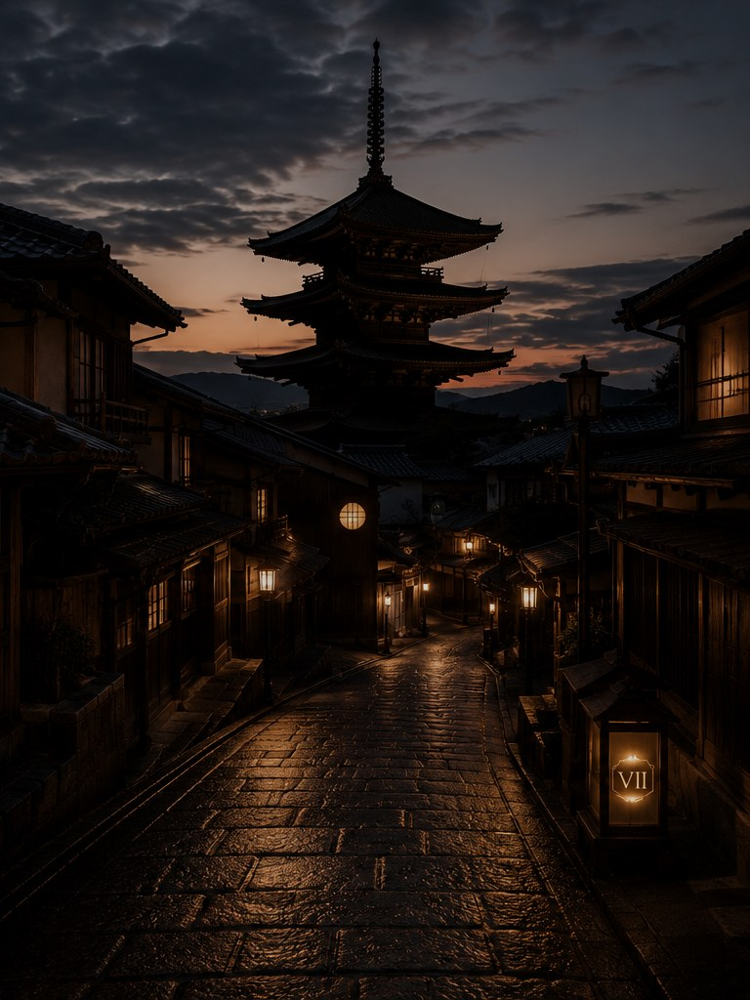
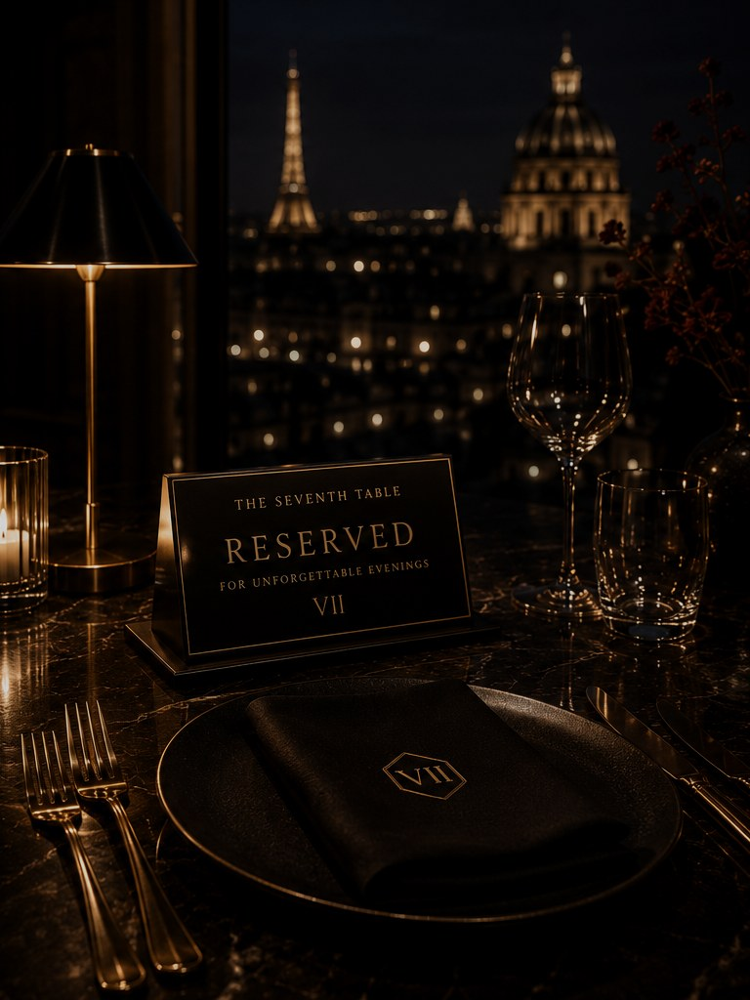

Hero Image
Primary editorial image for articles, features and digital announcements.
Download imageApproved information and visual materials for editorial, partnership and media use. Please preserve the original proportions and visual character of all assets.
The Seventh Table creates luxury dining soundtracks inspired by unforgettable destinations. Each release is presented as a Reservation — a carefully composed atmosphere for restaurants, hotels, lounges and private evenings.

Primary editorial image for articles, features and digital announcements.
Download image
Atmospheric brand image for profiles, partner presentations and hospitality stories.
Download image
Editorial image for destination-led coverage and storytelling.
Download image
Approved image for hospitality, licensing and commercial use enquiries.
Download imageMaterials may be used for editorial coverage of The Seventh Table. Commercial use, modification, resale or third-party licensing requires prior written approval.
{kind=link}
{kind=link}
{kind=link}
{kind=link}